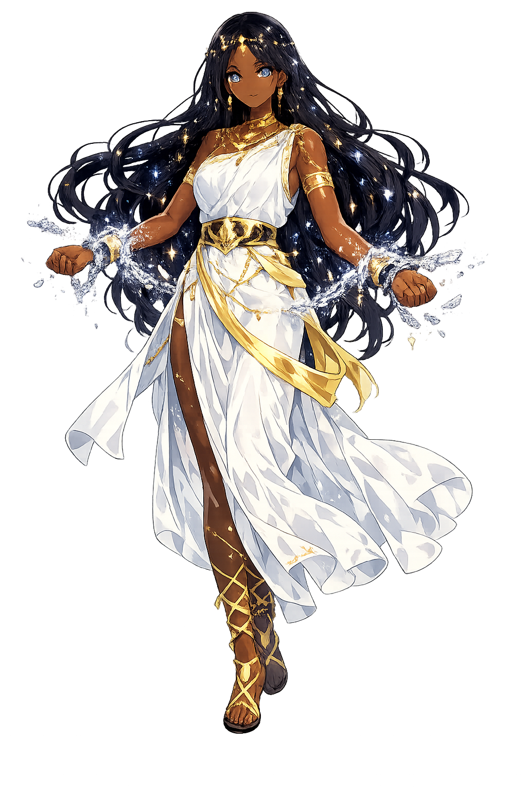

Ancient Domain
Andromédē is the princess chained to a sea-rock, offered to a monster and saved by a hero. Her myth is one of the most widely reproduced rescue narratives in Western art, and her catasterism placed her among the stars forever.
Extended Lore
Etymology · Phonology · Orthography · Cultural Legacy · Primary Sources

Essential information about Andromedē, Princess, Chained, Rescued by Perseus
From original script to Unicode restoration
Andromédē is Tier 1 because the Greek Ἀνδρομέδη contains both stress (acute on the long η) and length (η). The compound is transparently Greek, though the princess herself is said to dwell in Ethiopia.
Character-by-character philological analysis
| Character | Unicode | Name | Block | Phonetic Role |
|---|---|---|---|---|
| A | U+0041 | Latin Capital Letter A | Basic Latin | Same |
| n | U+006E | Latin Small Letter N | Basic Latin | Same |
| d | U+0064 | Latin Small Letter D | Basic Latin | Same |
| r | U+0072 | Latin Small Letter R | Basic Latin | Same |
| o | U+006F | Latin Small Letter O | Basic Latin | Same |
| m | U+006D | Latin Small Letter M | Basic Latin | Same |
| e | U+0065 | Latin Small Letter E | Basic Latin | Same |
| d | U+0064 | Latin Small Letter D | Basic Latin | Same |
| ē | U+0113 | Latin Small Letter E with Macron | Latin Extended-A | Macron: long eta |
The Tier 1 classification reflects how much of the original phonology this restoration preserves — stress and vowel length for Greek names, distinctive letters and diacritics for every other tradition.
From ancient cult to modern Unicode
Andromédē is the princess chained to a sea-rock, offered to a monster and saved by a hero. Her myth is one of the most widely reproduced rescue narratives in Western art, and her catasterism placed her among the stars forever.
The Romans adopted Andromeda without renaming her; she is one of the few Greek mythic figures to enter Latin poetry under her original form. In the Middle Ages and Renaissance she became an emblem of rescue, feminine beauty in distress, and the redemptive hero. Modern astronomy keeps her constellation and galaxy names intact. Some scholars compare her Near Eastern analogues — the exposed princess, the sea-monster combat — but the Greek narrative is distinctively tied to Perseus and the Argolid-Persian genealogy.
Andromeda is the archetype of the damsel in distress and the catasterized heroine. From Titian and Rubens to Victorian painting and modern fantasy, her image persists: the chained woman, the arriving savior, the monster from the deep. The Andromeda Galaxy, 2.5 million light-years away, carries her name into astrophysics, making her one of the few Greek figures whose cultural reach extends beyond the solar system.
Restoring Andromedē in a domain name is more than orthographic accuracy. It is a statement that the internet should recognize the full range of human writing — not only the ASCII keyboard.
Common questions about Andromedē, Princess, Chained, Rescued by Perseus, and Unicode restoration
In reconstructed pronunciation, Andromedē is /an.dro.mé.dɛː/ — approximately 'ahn-dro-MAY-day' — the third syllable is pitched and drawn out; the final -ē is long..
Andromedē means Ruler of men in the greek tradition.
Andromedē is associated with Sea-rock and chains (Her exposure to the ketos and the vulnerability of innocence before power), Mirror of Kassiepeia (The boast that set the myth in motion: her mother's claim to surpass the Nereids), Head of Medousa (The weapon Perseus carries when he rescues her), Wedding crown (Her marriage to Perseus and catasterism into the northern sky).
Plain ASCII andromeda strips the stress, length, and script that make the name specific. Unicode restoration returns the name to its original written dignity.
Kassiepeia boasted that she — or her daughter — was more beautiful than the Nereids. Poseidôn, enraged on behalf of his sea-nymphs, sent a flood and a sea-monster (ketos) to ravage Aithiopia. The oracle of Ammon declared that only the sacrifice of Andromédē could appease him.
The philological foundations of this restoration
Every claim on this page is grounded in established scholarship. The orthographic restorations follow disciplinary convention. The etymological chain follows the best available reference works. This is not invention — it is resurrection through scholarship.
You have traced the name from its earliest attestation to its Unicode restoration. Now return to the myth. The story is where the name lives.
Back to Lore